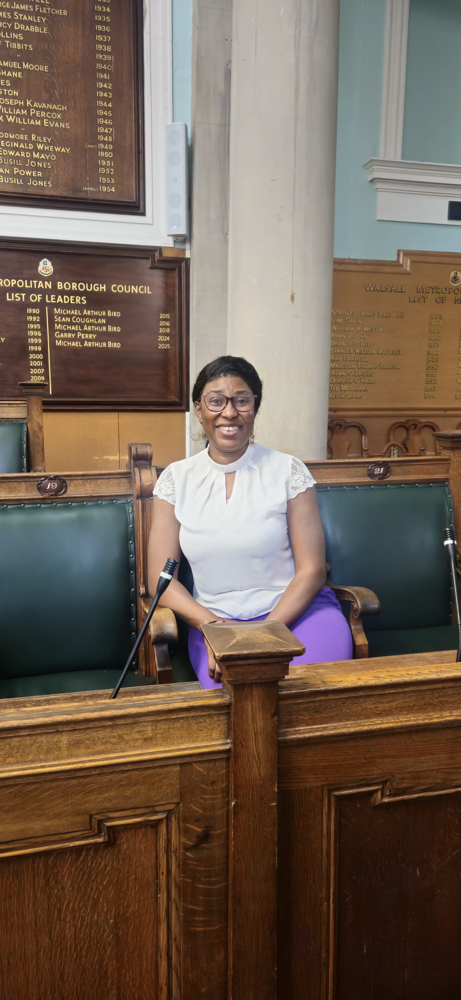
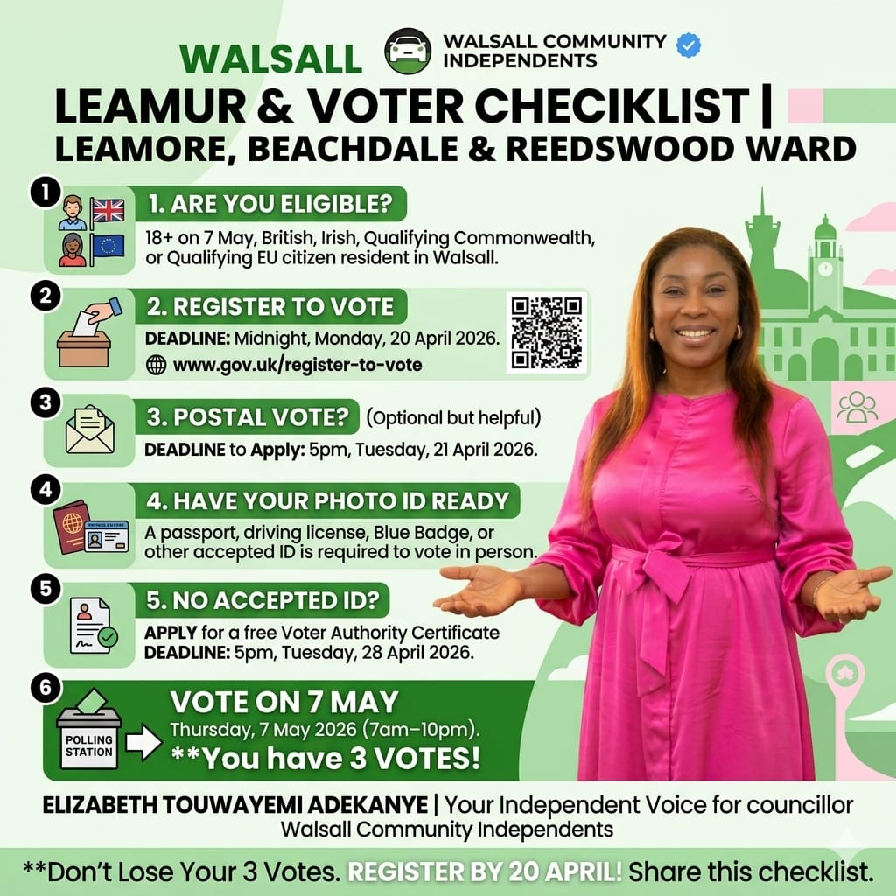
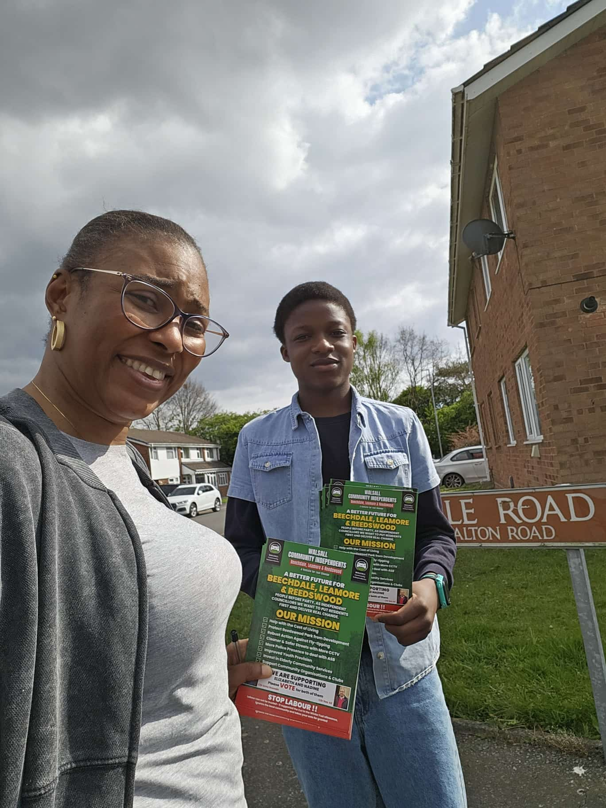
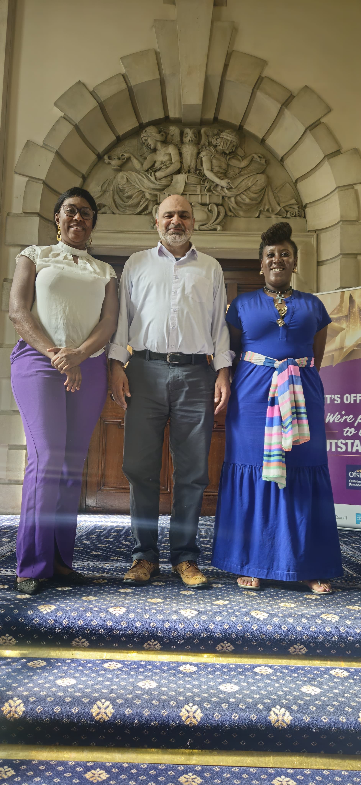
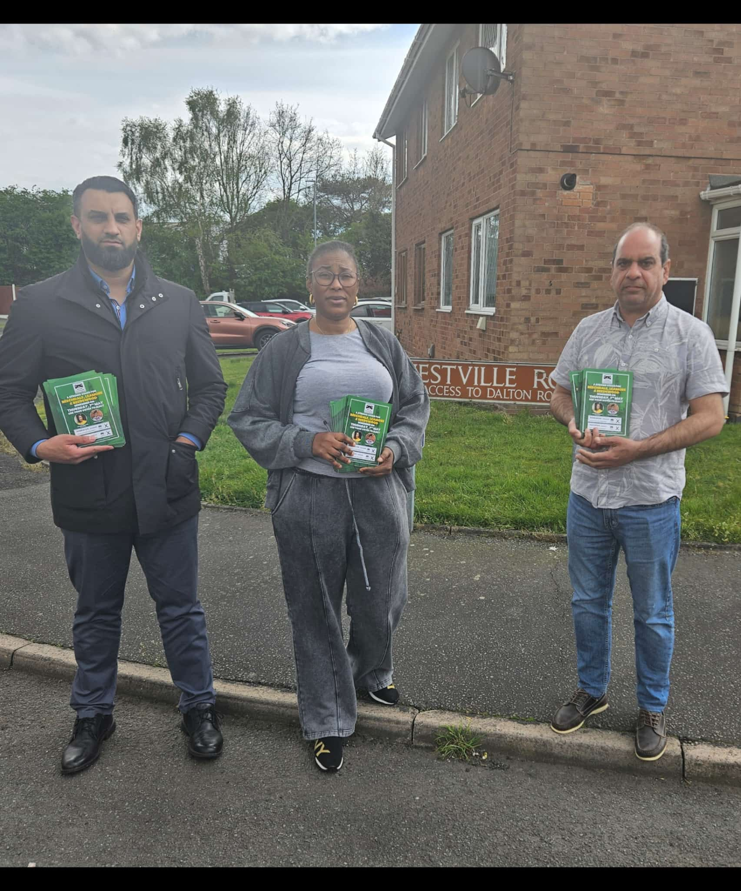
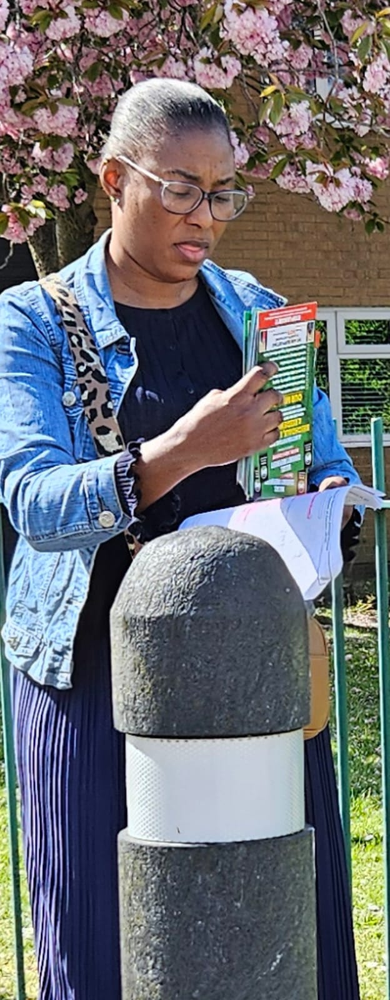
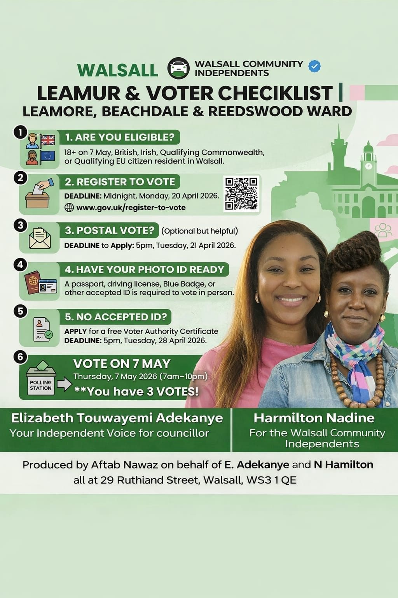

I am a Mental Health Nurse, a Church Leader, and a proud mother. I've faced the hardest challenges life can throw at a person and came out stronger. I'm not a career politician — I'm your neighbour.

A community champion with the experience, empathy, and determination to make real change.


Standing as your Independent Voice for Councillor in the Leamore, Beechdale & Reedswood Ward, representing the Walsall Community Independents.
As a Mental Health Nurse, Elizabeth brings professional expertise in wellbeing. As a Church Leader, she understands the power of community. As a mother, she fights for the future of every child in Walsall.
My commitment is simple: ensure every resident has the opportunity to thrive. Three core pillars drive my plan.
Attract new businesses and support existing ones with fresh, practical initiatives.
Prioritise the health, safety, and happiness of every resident in our ward.
Build a greener, more sustainable future for generations to come.
Walsall has been overlooked for too long. Here are the key areas I will fight to improve.
More investment to revitalise the town centre into a vibrant hub for commerce, culture, and community.
Improving access to local healthcare services is crucial for residents across our ward.
Expanding access to mental health support is essential to meet the growing needs of our community.
Enhancing programs for young people and the elderly to foster belonging and connection.
Preserving and enhancing green spaces for sustainability and the well-being of all residents.
Tackling ASB with better lighting, CCTV, police presence, and community engagement.
Our parks are the lungs of our community. Here's my plan to make them world-class.
Update play areas, walking paths, and sports facilities
Regular cleaning, landscaping, and upkeep
Accessible for everyone, including those with disabilities
Events, fitness classes, and community gatherings
Better lighting, security patrols, and clear signage
Seek input from residents on park improvements
Eco-friendly practices and resource conservation
Understanding our communities is the first step to serving them well.
A suburb of Bloxwich and Walsall in the Metropolitan Borough of Walsall. A mix of private and council housing built since the late 19th century.
A council housing development took place around the centre in the 1920s, including the opening of Somerfield Road (now part of the A34). A 280-flat multi-storey estate was built in the early 1960s to replace slums.
Ball House and Leadbetter House tower blocks, built during the 1960s, were demolished in late 2007 after 40 years of dominating the local skyline.
A residential estate developed in the 1950s/60s between Walsall and Bloxwich, built by Walsall Council to rehouse people from town centre slum clearances.
Bordered by the M6 motorway to the west and the Wyrley and Essington Canal to the east. Features local shops around Stephenson Square and the Beechdale Lifelong Learning Centre.
Beechdale Park is a designated Site of Importance for Nature Conservation (SINC). The area has faced challenges with antisocial behaviour, particularly around Stephenson Square.
An integral part of the ward that deserves dedicated attention and investment to ensure residents have access to quality services and safe, thriving communities.
Elizabeth is committed to representing all areas equally, ensuring Reedswood receives the focus it deserves on community safety, green spaces, and local amenities.
See Elizabeth fighting for the issues that matter to you.
Out in the community every day, listening and fighting for change.




Don't lose your 3 votes. Make your voice heard on Thursday, 7th May 2026.